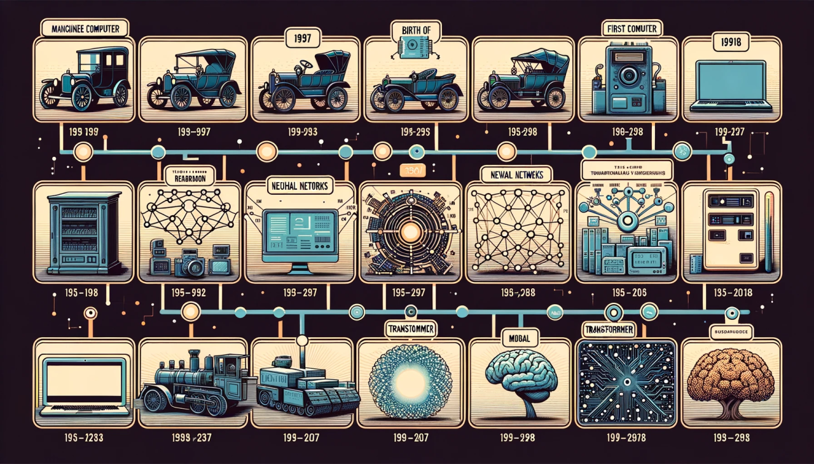
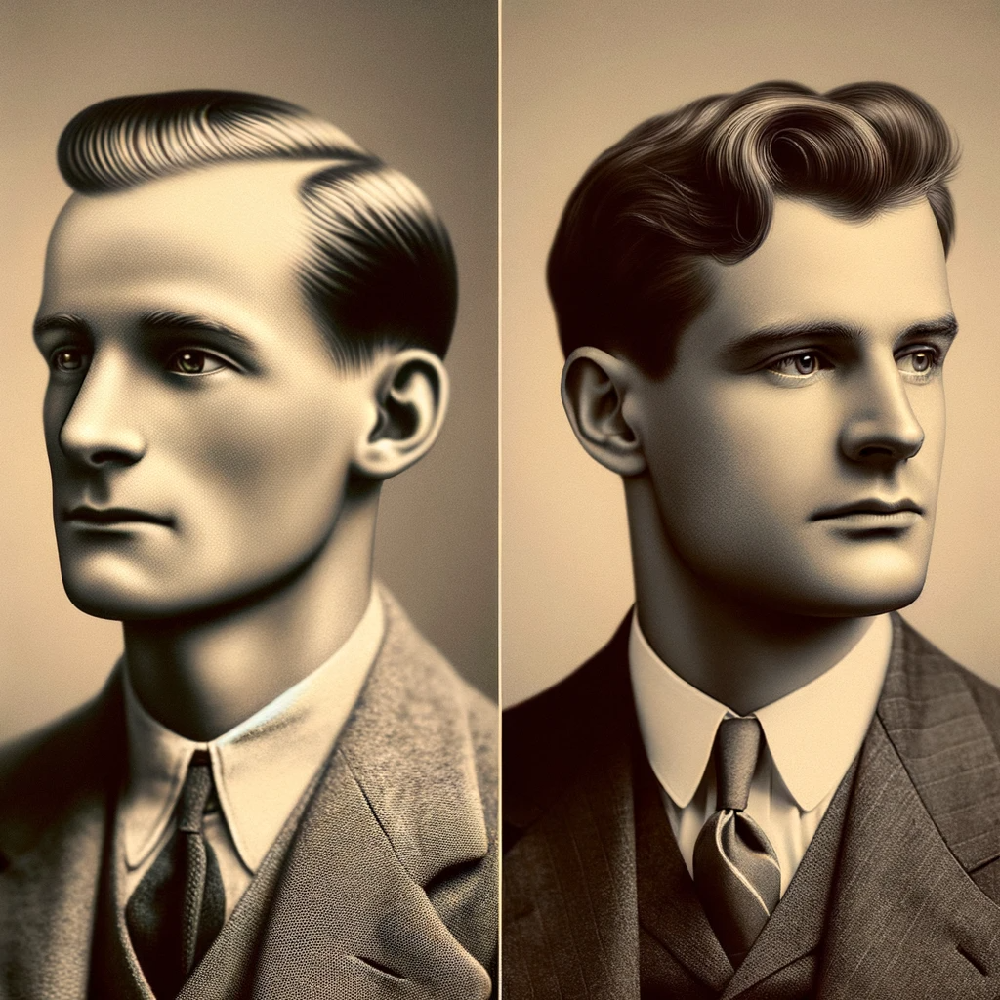
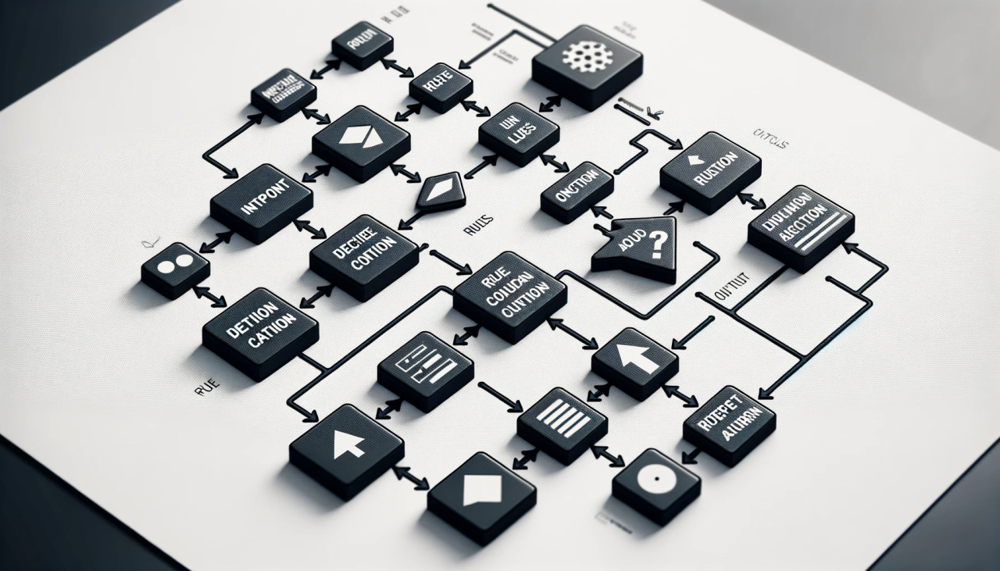
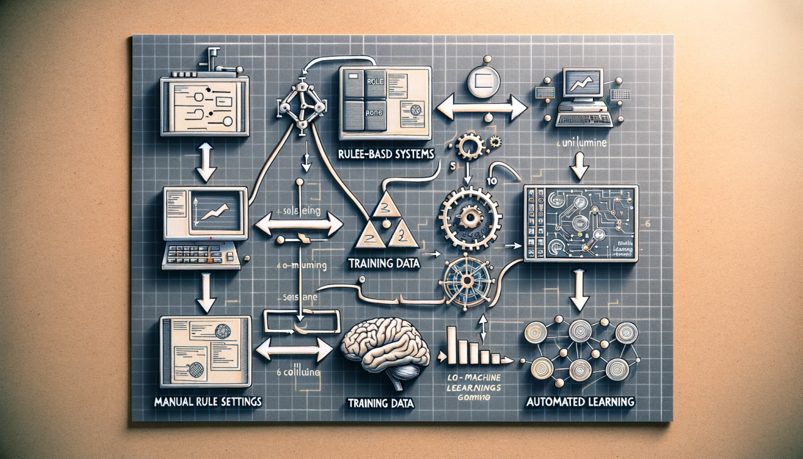
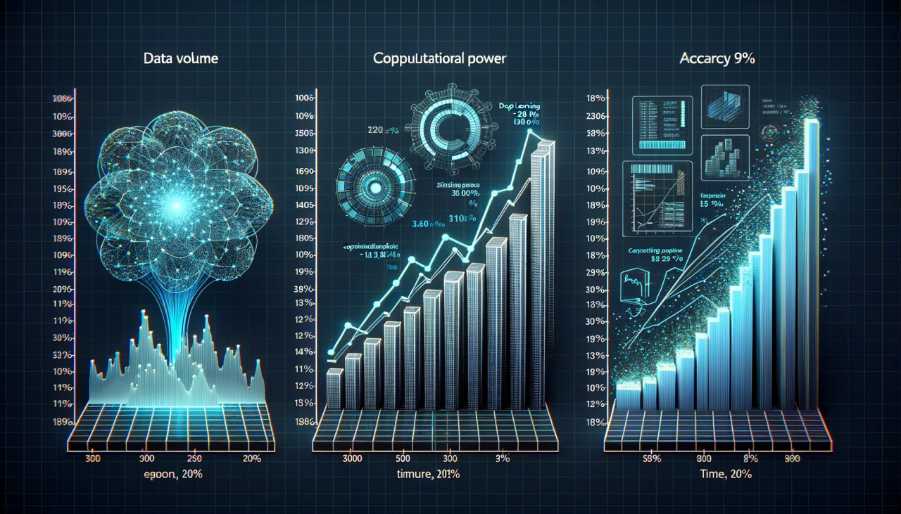
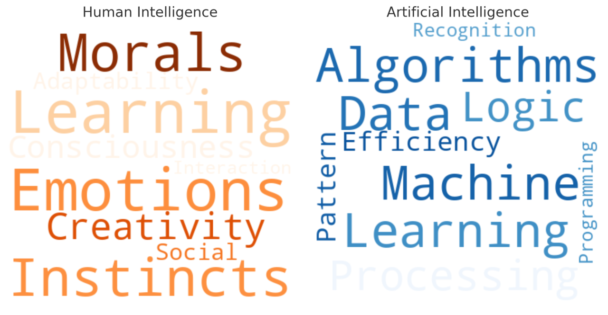
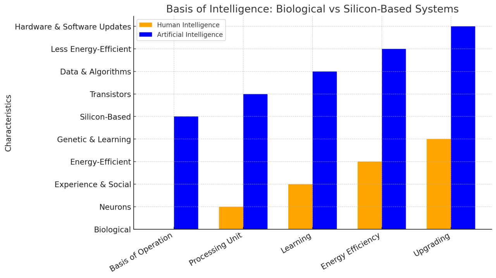
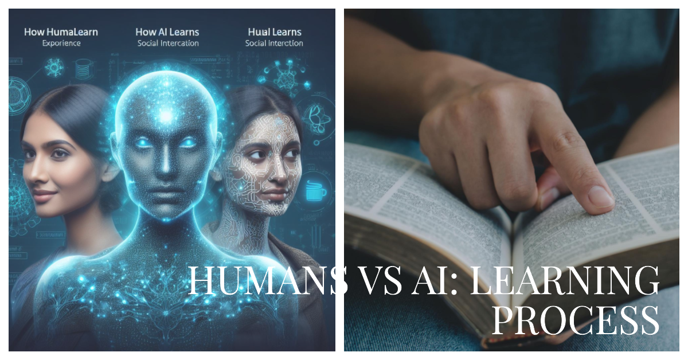
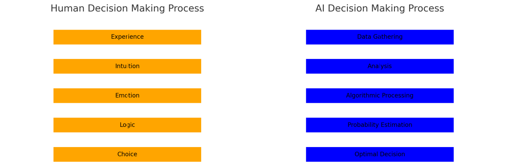

Session 1#
인공 지능의 개념 및 역사#
서론#
{kind=link}
인공 지능(AI)이 우리 생활의 다양한 측면에 계속해서 통합되면서 그 기원, 진화 및 현재 상태를 이해하는 것이 점점 중요해지고 있습니다. 이 강의 노트는 강의를 보완하며 AI를 형성한 다양한 패러다임과 주요 이정표에 대한 보다 자세한 내용을 제공합니다.
인공 지능이란 무엇인가?#

정의: 인공 지능은 컴퓨터 과학의 하위 분야로, 인간 지능을 필요로 하는 작업을 수행할 수 있는 기계를 만드는 것을 목표로 합니다.
작업: 이러한 작업은 학습, 추론, 문제 해결, 인식 및 언어 이해를 포함하여 광범위하게 확장됩니다.
하위 분야: AI는 로보틱스, 기계 학습, 자연어 처리(NLP), 컴퓨터 비전 등 다양한 하위 분야를 포함합니다.
핵심 포인트: AI는 기계에서 인간 지능을 시뮬레이션하기 위한 다학제 분야입니다.
초기 시작 - 1950년대#
{kind=link}
앨런 튜링: 그는 1950년에 튜링 테스트를 도입하여 기계 지능의 척도로 사용했습니다. 이 테스트는 인간과 구별할 수 없는 지능적 행동을 보이는 기계의 능력을 평가하는 것을 목표로 합니다.
다트머스 워크숍: 1956년, 존 매카시는 다트머스 워크숍을 조직하여 “인공 지능”이라는 용어를 만들었습니다. 이 이벤트는 종종 학문 분야로서의 AI의 시작으로 간주됩니다.
핵심 포인트: 1950년대에는 AI의 이론적 기초가 마련되었으며 학문 분야로서 확립되었습니다.
규칙 기반 시스템 - 1960년대 ~ 1970년대#
{kind=link}
올드 패션의 AI (GOFAI): 이 시대는 규칙 기반 시스템에 의해 지배되었으며, AI는 본질적으로 하드코딩된 규칙의 세트였습니다.
제한 사항: 이러한 시스템은 적응성에 제한을 받았으며 취약했습니다. 그들은 프로그램된 규칙의 범위 내에서만 작동할 수 있었습니다.
핵심 포인트: 규칙 기반 시스템은 AI의 초기 현상이었으나 범위와 적응성에 제한을 받았습니다.
기계 학습 패러다임 - 1980년대 이후#
{kind=link}
데이터 주도형 모델로의 전환: 분야는 명시적으로 프로그래밍되는 대신 데이터에서 학습할 수 있는 기계 학습으로의 패러다임 전환을 보았습니다.
가능하게 하는 요인: 이러한 전환은 계산 능력의 발전과 훈련을 위한 대규모 데이터셋의 가용성으로 가능해졌습니다.
핵심 포인트: 기계 학습은 규칙 기반 시스템에서 큰 벗어남을 표시하며, 더 많은 적응성과 복잡성 범위를 제공합니다.
딥 러닝과 그 이후 - 2010년대 이후#
{kind=link}
딥 러닝의 부상: 지난 10년 동안에는 딥 러닝 기법, 특히 다양한 작업에서 뛰어난 성과를 거두었던 신경망이 급증했습니다.
AI의 유비쿼터스성: AI 기술은 점점 더 일상 생활에 통합되고 있어, AI 유비쿼터스의 시작을 나타내는 것으로 보입니다.
핵심 포인트: 2010년대는 컴퓨팅 파워와 데이터 가용성이 더욱 증가함에 따라 딥 러닝의 빠른 발전을 표시하고 있습니다.
결론#
AI는 초기 규칙 기반 시스템의 초기 시기부터 현재 기계 학습과 딥 러닝에 의해 지배되는 시대까지 크게 발전했습니다. 앞으로 AI는 다양한 부문에 더욱 통합되어 기술과의 상호 작용 방식을 혁명적으로 바꿀 것으로 예상됩니다.
인공지능과 인간 지능의 차이#
Introduction#
{kind=link}
인공지능은 인간처럼 사고하고, 학습하며, 문제를 해결하는 컴퓨터 시스템이나 기계의 능력을 의미합니다. 여기에는 머신러닝, 딥러닝 등과 같은 기술들이 포함됩니다. 반면, 인간 지능은 인지, 이해, 학습, 의사소통, 추론 등의 복잡한 정신적 과정들을 통해 지식을 적용하고, 새로운 상황에 적응하는 능력을 말합니다.
인공지능: 기계나 시스템의 지능적 태스크 수행 능력
인간 지능: 학습, 이해, 문제 해결 능력
기술적 구현과 인간의 정신 과정의 차이 강조
두 개념의 기본적인 정의와 소개
Basis of Intelligence#
{kind=link}
인간의 뇌는 약 860억 개의 뉴런과 수천 조의 시냅스로 구성되어 있어 복잡한 연결망을 형성합니다. 이 연결망을 통해 정보를 처리하고 학습합니다. 인공지능의 경우, 수십억 개의 트랜지스터와 복잡한 회로가 이와 유사한 역할을 수행하며, 이러한 하드웨어 구조 위에서 소프트웨어가 실행됩니다.
인간 지능: 뉴런과 시냅스의 생물학적 네트워크
인공지능: 트랜지스터와 회로의 실리콘 기반 구조
복잡한 연결망을 통한 정보 처리의 유사점
구조적 차이에 대한 이해
Learning Process#
{kind=link}
인간은 경험을 통해 배우고, 사회적 상호작용을 통해 지식을 습득하며, 문화적 맥락을 이해합니다. 인공지능은 대량의 데이터를 처리하고, 알고리즘을 통해 패턴을 인식하며, 특정 태스크에 대해 학습합니다. 인간은 새로운 상황에 유연하게 적응하지만, 인공지능은 주어진 데이터와 알고리즘의 한계 내에서 작동합니다.
인간 학습: 경험, 사회적 상호작용, 문화적 이해
AI 학습: 대량의 데이터 처리, 패턴 인식, 태스크 특화 학습
적응과 일반화에서의 차이
학습 방식의 본질적 차이 이해
Cognitive Abilities#

인간은 감정 지능, 추상적 사고, 창의성과 같은 고유한 인지 능력을 가지고 있습니다. 반면, 인공지능은 패턴 인식, 계산 속도, 대규모 데이터 처리 등에서 뛰어난 능력을 보입니다. 둘 사이의 겹치는 영역에서는 언어 이해, 기본적인 문제 해결 등이 있습니다.
인간의 인지 능력: 감정 지능, 추상적 사고
AI의 인지 능력: 패턴 인식, 계산 속도
공통 인지 능력: 언어 이해, 문제 해결
인간과 AI의 인지 능력 비교
Decision Making#
{kind=link}
인간은 본능, 감정, 가치, 윤리 등을 고려하여 결정을 내립니다. 이에 비해 인공지능은 주어진 데이터와 알고리즘을 기반으로 논리적 분석과 확률적 추론을 통해 결정을 내립니다. 인간의 결정은 때로 비이성적일 수 있으나, 인공지능은 일관성과 반복 가능성을 가지고 있습니다.
인간의 결정 과정: 본능, 감정, 가치, 윤리
AI의 결정 과정: 논리적 분석, 확률적 추론
결정 메커니즘의 차이점
결정 과정에서의 인간과 AI의 다른 접근 방식
Creativity and Innovation#
인간은 미술, 음악, 문학 등에서 창의성을 발휘합니다. 이는 개인의 감정, 생각, 경험에서 비롯됩니다. 인공지능은 알고리즘 생성 콘텐츠, 데이터 기반 설계 등으로 ‘창의적’ 작업을 수행할 수 있지만, 이는 데이터와 규칙에 의해 제한됩니다.
인간의 창의성: 예술, 문학에서의 개인적 표현
AI의 ‘창의성’: 알고리즘과 데이터에 의한 생성
창의적 접근의 차이점
인간과 AI의 창의성 비교
Ethical and Moral Reasoning#
인간은 문화적, 사회적 맥락에 기반한 도덕성과 가치관을 가지고 윤리적 판단을 내립니다. 인공지능은 주어진 프로그래밍된 규칙과 알고리즘에 따라 결정을 내리므로, 복잡한 인간의 윤리적 문제에 적절히 대응하기 어려울 수 있습니다.
인간의 도덕적, 윤리적 판단: 문화적, 사회적 가치 기반
AI의 윤리적 결정: 프로그래밍된 규칙과 알고리즘 기반
윤리적 추론에서의 인간과 AI의 차이
AI의 윤리적 도전 과제 이해
Conclusion#
AI와 인간 지능 사이에는 구조적, 기능적, 윤리적 차이점이 명확히 존재합니다. 그러나 이러한 차이점을 인식하고 이해함으로써, 우리는 두 지능이 협력하여 더 큰 가능성을 탐색할 수 있습니다. AI의 강점과 한계를 인지하고, 인간의 창의성과 복잡한 인지 능력을 결합함으로써 새로운 가치를 창출할 수 있습니다.
인간 지능의 보완으로서의 AI
협력과 상호 보완의 중요성
AI와 인간이 함께 나아갈 방향에 대한 통찰